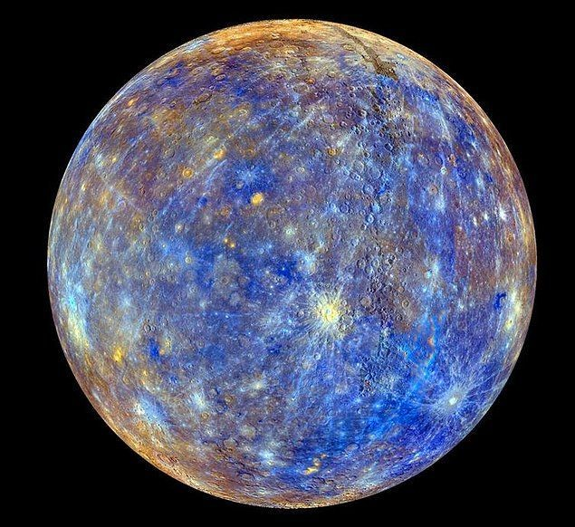

Güneş, Güneş Sistemi'nin ana yıldızı ve en önemli öğesidir. Büyük kütlesi nükleer kaynaşmayı sürdürmek için yeterince yüksek bir iç yoğunluk sağlar. Nükleer kaynaşma çok büyük miktarlarda enerji açığa çıkarır ve bu enerjinin çoğu görünür ışık gibi elektromanyetik ışımalarla dış uzaya yayılır. Güneş bir sarı cüce olarak sınıflandırılır ancak galaksimizde bulunan diğer yıldızlarla kıyaslandığında bu isim yanıltıcı olabilir çünkü Güneş ortalama büyüklük ve parlaklıkta bir yıldızdır. Yıldızlar, parlaklıkları ve yüzey sıcaklıklarına göre yerleştirildikleri Hertzsprung-Russell diyagramı ile sınıflandırılır. Genel olarak daha sıcak olan yıldızlar daha parlaktır. Bu modele uyan yıldızlar anakolu oluşturur ve Güneş anakolun tam ortasında yer alır. Ancak Güneş'ten daha parlak ve sıcak yıldızlara az rastlanırken, daha az parlak ve soğuk yıldızlara sıkça rastlanır.Güneş'in anakoldaki konumunun bir yıldızın yaşamının en güzel dönemi olduğuna inanılmaktadır. Henüz nükleer kaynaşma için kullandığı yakıt olan hidrojen kaynaklarını tüketmemiştir. Güneş gittikçe daha parlaklaşmaktadır, yaşamının başlarında şu ankinden %75 daha az parlaktı.
Merkür
Merkür (0,4 AB) Güneş'e en yakın ve en küçük (0,055 Dünya kütlesi) gezegendir. Doğal uydusu yoktur ve gök taşı kraterlerinden başka bilinen tek jeolojik özelliği; büyük bir olasılıkla oluşumunun başlarında geçirdiği büzülme döneminde oluşmuş olan "kırışıklık sırtları"dır.[40] Merkür'ün önemsenmeyecek kadar az olan atmosferi Güneş rüzgârı nedeniyle yüzeyinden kopan atomlardan oluşur.[41] Görece büyük demir çekirdeği ve ince mantosu henüz tam olarak açıklanamamıştır. Varsayımlar arasında, büyük bir çarpışma nedeniyle dış katmanlarından kurtulduğu ve genç Güneş'in enerjisi yüzünden tam olarak kaynaşma yoluyla büyüyemediği vardır.Neredeyse ısıyı koruyacak bir atmosferi olmamasından dolayı, Merkür'ün yüzey sıcaklığı Güneş Sistemi'ndeki diğer tüm gezegenlerden daha fazla günlük olarak değişir. Bazı ekvatoral bölgelerde gece 100 K (-173 °C; -280 °F)'den gündüz 700 K (427 °C; 800 °F)'e kadar değişir. Kutuplar sürekli olarak 180 K (-93 °C; -136 °F)'in altındadır.
Venüs
Venüs veya Çolpan, Güneş Sisteminde, Güneş'e uzaklık bakımından ikinci sıradaki, sıcaklık bakımından da birinci sıradaki gezegendir.Güneşe uzaklık bakımından ikinci sırada olmasına rağmen en sıcak gezegen olmasının nedeni de atmosferinin gelen güneş ışınlarının dışarı çıkmasına izin vermemesidir. Ayrıca Zühre, Çolpan veya Çoban Yıldızı olarak da bilinir. Bu gezegen adını Eski Roma tanrıçası Venüs (Eski Yunan Mitolojisi'nde Afrodit)'ten almıştır. Venüs'ün astronomik sembolü ise kadınlık sembolü ile aynıdır. Kendi ekseni etrafında, Güneş Sistemi'ndeki diğer tüm gezegenlerin aksi istikametinde döner. Güneş etrafındaki dönüşünü 224.7 Dünya gününde tamamlar.Büyüklüğü açısından Dünya ile benzerlik gösterdiğinden Dünya ile kardeş gezegen veya dünyanın ikizi olarak da bilinmektedir. Gökyüzünde Güneş'e yakın konumda bulunduğundan ve yörüngesi Dünya'nınkine göre Güneş'e daha yakın olduğundan, yeryüzünden sadece Güneş doğmadan önce veya battıktan sonra görülebilir. Bu yüzden Venüs, Akşam Yıldızı, Sabah Yıldızı veya Tan Yıldızı olarak da isimlendirilir. Çoban Yıldızı da denmektedir. Görülebildiği zamanlar, gökyüzündeki en parlak cisim olarak dikkat çeker.
Dünya
Dünya,[d] Güneş Sistemi'nde Güneş'e en yakın üçüncü gezegen olup şu an için üzerinde yaşam ve sıvı su barındırdığı bilinen tek astronomik cisimdir. Radyometrik tarihleme ve diğer kanıtlara göre 4,5 milyar yıldan fazla süre önce oluşmuştur. Dünya'nın yer çekimi, uzaydaki diğer nesnelerle, özellikle Güneş'le ve tek doğal uydusu Ay'la etkileşime girer. Dünya'nın Güneş'in etrafındaki yörüngesi, 365,256 güneş gün, yani bir yıldız yılı sürer. Bu süre içerisinde Dünya, kendi ekseni etrafında 366,265 kez döner Dünya'nın dönme ekseni, yörünge düzlemine göre eğik olup bu eğiklik mevsimlerin oluşmasına yol açmaktadır. Dünya ile Ay arasındaki kütle çekimi etkileşimi; Dünya'nın eksenindeki yönelimi sabitler, gelgitlere neden olur ve dönmesini kademeli olarak yavaşlatır. Katı ya da kaya ağırlıklı yapısı nedeniyle üyesi bulunduğu yer benzeri gezegenler grubuna adını veren Dünya, bu gezegen grubunun kütlece ve hacimce en büyük üyesi olmasının yanı sıra Güneş Sistemi'ndeki en yoğun gezegendir. Litosfer olarak adlandırılan Dünya'nın en dış katmanı, milyonlarca yıldır hareket hâlindeki rijit tektonik levhalardan oluşmaktadır. Dünya yüzeyinin yaklaşık %29'u, kıtalar ve adaların meydana getirdiği kara iken; suyla kaplı olan kalan %71'lik kısım ise okyanuslar, göller, akarsular ve diğer tatlı suların oluşturduğu hidrosfer olarak adlandırılır. Gezegenin kutup bölgelerinin çoğu buzla kaplıdır. Dünya'nın iç kısmı ise merkezde yer alan katı demirden meydana gelen hâlâ etkin durumundaki iç çekirdek, gezegenin manyetik alanını oluşturan sıvı hâldeki dış çekirdek ve tektonik levhaların hareket etmelerine yol açan mantodan meydana gelmektedir.
Mars

Mars, Güneş Sistemi'nin Güneş'ten itibaren dördüncü gezegeni. Roma mitolojisindeki savaş tanrısı Mars'a ithafen adlandırılmıştır. Yüzeyindeki yaygın demir oksitten dolayı kızılımsı bir görünüme sahip olduğu için "Kızıl Gezegen" de denir. İnce bir atmosferi olan Mars gerek Ay'daki gibi meteor kraterlerini, gerekse Dünya'daki gibi volkan, vadi, çöl ve kutup bölgelerini içeren çehresiyle bir yerbenzeri gezegendir. Ayrıca dönme periyodu ve mevsim dönemleri Dünya’nınkine çok benzer. 2 adet uydusu bulunmaktadır. Mars’taki Olimpos Dağı (Olympus Mons), Güneş Sistemi’nde bilinen en yüksek dağdır ve Marineris Vadisi (Valles Marineris) adı verilen kanyon en büyük kanyondur. Ayrıca Haziran 2008’de Nature dergisinde yayımlanan üç makalede açıklandığı gibi, Mars’ın kuzey yarımküresinde 10.600 km uzunluğunda ve 8.500 km genişliğindeki dev bir meteor kraterinin varlığı saptanmıştır. Bu krater, bugüne kadar keşfedilmiş en büyük meteor kraterinin (Ay'ın güney kutbu kısmındaki Atkien Havzası) dört misli büyüklüğündedir.
Jüpiter

Jüpiter veya Erendiz (Müşteri), Güneş Sistemi'nin en büyük gezegeni. Güneş'ten uzaklığa göre beşinci sırada yer alır. Adını Roma mitolojisindeki tanrıların en büyüğü olan Jüpiter'den alır. Büyük ölçüde hidrojen ve helyumdan oluşmakta ve gaz devi sınıfına girmektedirJüpiter gerek çap gerekse kütle açısından Güneş Sistemi'ndeki en büyük gezegendir. Nispeten düşük olan yoğunluğu (suyun yoğunluğunun 1,33 katı), gezegenin akışkan yapısı ve kendi çevresindeki dönüş hızının yüksekliği nedeniyle, Satürn kadar olmasa da ekvatorda geniş, kutuplarda basık elipsoid görünüme sahiptir. Yansıtabilirlik derecesi (albedo) 0,52 olan gezegen, böylece yüzeyine düşen Güneş ışığının yarıdan fazlasını görünür tarafta yansıtmaktadır.[6] Ancak kızılötesi alandaki ışınım ölçüldüğünde, Jüpiter'in, Güneş'ten aldığı enerjinin 2,3 katı kadarını dışarı yaydığı görülür. Bu nedenle gezegen, Güneş'e olan uzaklığına göre hesaplanan 106 K'den (-167 °C) çok daha yüksek bir etkin sıcaklığa sahiptir ve 126 K (-147 °C) sıcaklığında bir kara cisim gibi ışır.[7] Jüpiter'in kendi içinde yarattığı bu enerji fazlası, gezegenin yer çekiminin etkisi ile yavaşça kendisi üzerine çökerek küçülmesi sırasında dönüştürülen potansiyel enerji ile açıklanmaktadır. Bu olgu Kelvin-Helmholtz mekanizması olarak adlandırılır.
Uranüs

Uranüs, Güneş Sisteminin Güneş'ten uzaklık sıralamasına göre 7. gezegenidir.[18] Çap açısından Jüpiter ve Satürn'den sonra üçüncü, kütle açısındansa bu iki gezegen ve Neptün'ün ardından dördüncü sırada gelir. Adını Yunan mitolojisindeki gökyüzü tanrısı Uranos'tan (Yunanca'da Οὐρανός, Latinceleştirilmiş şekli ile Uranus) alır.[19] 1781 yılında William Herschel tarafından keşfedilmiştir ve Buz devi sınıfına girer.Uranüs, Güneş çevresinde bir devrini 84 yılda tamamlar. Hafifçe eliptik olan yörüngesi boyunca, Güneş'e uzaklığı yaklaşık 18-20 astronomik birim arasında değişir. Uranüs’ün kütlesi Dünya’nınkinin 15 katı, hacmi ise 63 katıdır. Uranüs’ün çevresinde ince, keskin hatlı ve koyu renkli 10 halkanın olduğu tespit edilmiştir. Halkaların tümü, yaklaşık 1 m çapında koyu renkli kaya benzeri parçalardan oluşmaktadır. Bunların yapısı henüz belirlenememiştir. Uranüs, kutbu güneşe bakacak şekilde tekerlek gibi döner. Böylece etrafındaki halkalar da dik olarak onunla birlikte döner.
Neptün
Neptün, Güneş Sistemi'nin sekizinci, Güneş'e en uzak ve katı yüzeyi bulunmayan gezegenidir. Gaz gezegenler sınıfında yer alan Neptün, Jüpiter ve Satürn'e kıyasla farklı yapısından ötürü buz devi olarak da sınıflandırılır. Güneş sisteminin Uranüs ile beraber en soğuk iki gezegeninden biridir. Katı yüzeye sahip olmamakla birlikte gezegenin dış katmanı genel olarak hidrojen ve helyumdan oluşur. İç katmanında ise gezegenin kütlesinin çoğu kayalık bir çekirdeğin üzerindeki sıcak ve yoğun maddelerden (su, metan ve amonyak) oluşur.[16] Adını Roma deniz tanrısı Neptunus'ten alan gezegen, Güneş Sistemi'nde çapına göre en büyük dördüncü, kütlesine göre ise en büyük üçüncü gezegendir. Dünya'dan 17 kat fazla kütlesiyle, ikizi sayılabilecek Uranüs'ten biraz daha büyük ve daha yoğundur.[17] Güneş'e olan uzaklığı ortalama 30 Astronomik birimdir.23 Eylül 1846'da keşfedilen Neptün,[1] deneysel gözlemlerden önce matematiksel tahminlerle tespit edilen ilk ve tek gezegendir. Alexis Bouvard, Uranüs'ün yörüngesindeki beklenmeyen değişikliklere, bilinmeyen bir gezegenin kütleçekimsel etkisinin sebep olduğunu öngördü. Daha sonra Neptün, Johann Gottfried Galle tarafından Urbain Le Verrier'in tahmin ettiği pozisyonun çok yakınında bir bölgede gözlemlendi. Kısa bir süre sonra da en büyük uydusu Triton keşfedildi. Kalan 12 uydusu ise ancak 20. yüzyılda keşfedilebildi. Neptün şimdiye kadar sadece Voyager 2 tarafından ziyaret edildi.